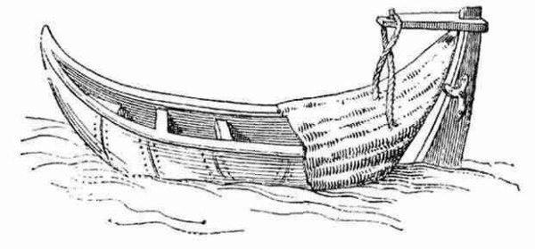
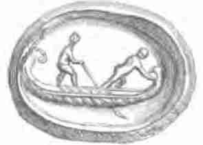
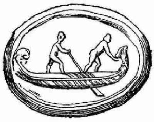

Чтобы завершить начатую тему о корабле, рассмотрим оставшийся у нас неисследованным вопрос: о происхождении латинского термина carabus.
Если у греков слово κάραβος в отношении водоходных средств стало употребляться, как нам удалось установить, с начала VII века, то латинское carabus имеет более глубокие исторические корни. Начнем мы исследование этих корней не с помощью Дюканжа, как обычно, а обратимся к Исидору Севильскому (570— 638 гг.) Роль епископа Севильи в европейской культуре трудно переоценить. Шарль Монталамбер назвал его последним мудрецом античности (le dernier savant du monde ancien); он же был и первым христианским энциклопедистом. Исидор «взял на себя задачу систематизации всего известного тогда знания и изложения его в понятной для современников форме. Его труд приобрел огромное историческое значение для всего позднего средневековья, став главным источником образованности для ряда поколений и тем самым во многом определив интеллектуальный кругозор средневекового человека и методы его мышления.» ( Миллер Т. А. Средневековая латинская литература IV-IX вв. М. 1970). В «Божественной Комедии» его имя названо рядом с Бедой Достопочтенным:
За ним пылают, продолжая круг,
Исидор, Беда и Рикард с ним рядом,
Нечеловек в превысшей из наук.
(«Рай», X, 130—132; перевод И. Лозинского)
В огромной толковой энциклопедии («Этимологии, или Начала») Исидор знакомил своих современников с историей, географией, космологией, антропологией, теологией, грамматикой в форме терминологических исследований, разъясняющих смысл и содержание главнейших понятий, которыми оперировал средневековый человек. Серьезных комментированных переводов «Начал» Исидора на современные европейские языки нет. Причину такого положения дел объяснил Э. Брео в своей фундаментальной работе (Ernest Brehaut, An Encyclopedist of the Dark Ages Isidore of Seville, Columbia University, New York: 1912). Латынь Исидора, хотя и не деградировала до такой степени, как у Григория Турского, однако уже значительно искажена, краткость доведена до абсурда. Переведены лишь отдельные фрагменты этого труда. К сожалению, в число этих фрагментов не попала интересующая нас Книга XIX “D e n a v i b u s , a e d i f i c i i s e t v e s t i b u s”. («О кораблях, сооружениях и одежде»). Но мы не будет делать ее полный перевод В данном случае нас интересует лишь одно предложение из этой книги:
Carabus parva scapha ex vimine facta, quæ contecta crudo coreo genus navigii præbet.
Карабус – тип судна, имеющего небольшие размеры; сделан из ивняка и обтянут сыромятной кожей.
(Isidor. Orig. xix, 1, 26)
В отличие от своего греческого тезки, у латинского carabus’а имеется даже изображение. Оно сохранилось в одном из манускриптов Витрувия и практически в таком же виде найдено на мраморном надгробии (изображение которого имеется в книге M. A. Boldetti, Osservazioni sopra i cimiteri dei santi martiri, ed antichi cristiani di Roma, etc., Rome, 1720.)

Линии на бортах, которые на оригинале видны лучше, представляют собой швы, которыми соединялись куски кожи.
Еще одно изображение, которое считают изображением carabus’а, появилось в книге M.Graser'а Gemmen mit Darstellungen antiker Schiffe, pl. II, 46, p.13, где содержится описание геммы вырезанной на карнеоле (красном халцедоне, сердолике). В описании много интересного, однако M.Graser не делает различия между carabus и κάραβος, считая их одним и тем же типом судов. Мы видели выше, что это не так.


В целом, отличить, где в источниках речь идет о латинском carabus, а где о греческом κάραβος, не просто. Даже если мы имеем дело с уважаемыми исследователями. Так, О.Жаль в своем «Морском словаре», в статье CARABUS, сразу же пишет «Transcript. du gr. Κάραβος», поставив тем самым знак равенства между этими двумя судами. Поэтому и в подборке цитат он смешивает их и не всегда можно понять, идет ли речь о κάραβος или латинском carabus. Так, говоря о том, что carabus является вспомогательным плавсредством для более крупных кораблей, О.Жаль ссылается на Родосский морской закон. Этот сборник правил мореплавания и морской торговли был составлен в Византии в VII-VIII вв. и дошел до наших дней благодаря тому, что появился в виде Приложения к краткому своду византийского законодательства, изданному в 726 г. императором Львом III и известному под названием Эклога. Ранее Морской закон приписывали самому Льву III и его сыну Константину, однако в последнее время от этой идеи отказались. Греческий подлинник, озаглавленный ΝΌΜΟΣ ῬΟΔΊΩΝ ΝΑΥΤΙΚῸΣ, был разделен на три части. Первая часть была фактическим подтверждением положений «Морского закона» римских императоров. Вторая часть относилась к регулированию участия членов экипажа в доходах корабля и устанавливала внутренние правила на борту. И наконец третья, самая большая часть относилась непосредственно к морскому законодательству. Я пользовался публикацией Родосского морского закона, содержащейся в I томе (Гл. VI “De la Compilation connue sous le nom de Droit maritime des Rhodiens”) известного исследователя морского права J.M. Pardessus «Collection des Lois Maritimes Anterieures au XVIIIe siecle». (Paris,1828). Там же можно найти подробный комментарий к своду.В
В статьях 2 и 11 третей части Родосского морского закона упоминаются плавсредства типа Κάραβος. Причем и в том и в другом случае речь идет не об автономных судах, а скорее о шлюпках как принадлежности крупных кораблей (мы уже упоминали ранее, что этот термин использовался в таком смысле, в том числе и в языке славян). О.Жаль, поступая в соответствии с заявленной им идеей об идентичности κάραβος и carabus тут же приходит в выводу, что Carabos это просто корабельные шлюпки. Тем более, продолжает он, что термин употреблен во множественном числе. Все это правильно, только речь здесь идет о κάραβος, а перевод термина на латинский язык зависит от переводчика. Так, в том экземпляре Родосского морского закона, которым пользовался я, этот термин переведен как lintres instructos – «оснащенные шлюпки», что вполне соответствует духу документа.
В тех же документах, где термин carabus используется не в качестве перевода соответствующего греческого термина, а автономно, картина качественно иная. Поговорим об этом в следующий раз.